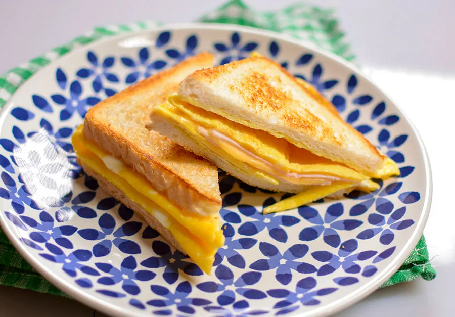

Prosta wyszukiwarka
Tosty

2 jajka
2 kromki chleba tostowego
łyżeczka masła
plasterek sera topionego
2 plasterki szynki
Hot Dogi

20 g oleju
200g cebuli
20 g cukru
80g piwa
½ łyżeczki soli
stek t-bone
dobrej jakości stek o grubości min. 3 cm
oliwa, sól i pieprz
masło
czosnek
gałązka rozmarynu
Twórca: Monika Pazdej